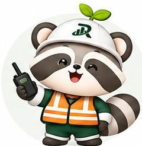
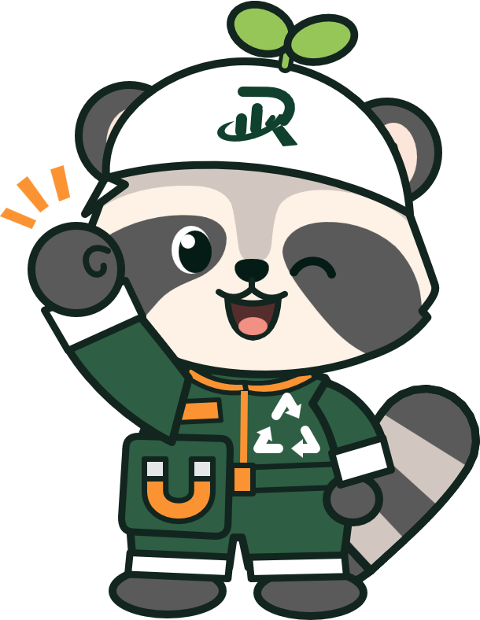
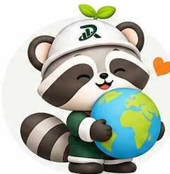

회사 소개와 전사 공지
공정과 브랜드, 공지, 조직, 설비, 품질 기준을 한곳에 모았어요.
ReBorn Steel · 리본스틸㈜
버려진 철스크랩을 녹여 철근으로 다시 태어나게 하는 전기로 제강사입니다.
100톤 전기로 한 기로 1년에 철근(SD400~SD600) 80만 톤을 만듭니다. 원가는 낮추면서 Cu·Sn 규격은 지키려고, 스크랩 배합은 AI 배합 에이전트와 함께 정해요.
공정 단계: 성분은 배합에서 결정된다
2단계가 내 업무1스크랩 입고·야드
무게를 달고 검수한 뒤 등급별로 쌓아 둡니다. 등급마다 가격, 실수율, 불순물 함량이 달라요.
2배합·장입 (내 업무)
강종에 맞춰 등급별로 몇 톤씩 넣을지 정하고, 버킷에 담아 전기로에 넣어요. AI 배합 에이전트가 일하는 곳이 바로 여기예요.
3전기로 용해
흑연 전극의 아크열로 스크랩을 녹이고, 산소를 불어 넣어 탄소와 인을 뺍니다. 슬래그는 따로 빼냅니다.
4LF 정련
래들에 합금철을 넣고 Ar로 저으면서 탈산·탈황을 하고, 성분과 온도를 맞춰요.
5연속주조
용강을 턴디시와 몰드로 흘려 굳힌 다음, 빌릿 길이로 자릅니다.
6압연
빌릿을 다시 달군 뒤 압연기로 눌러 철근을 만들고, 건설 현장으로 내보내요.
왜 배합이 중요할까요? Cu·Sn은 철보다 잘 산화되지 않아서 용해나 정련으로는 빠지지 않아요. 너무 많으면 압연할 때 표면이 갈라지는데(적열취성), 그래서 최종 성분은 사실상 스크랩 배합에서 정해집니다.
부산물 배가스는 집진기를 거쳐 내보내고, 제강분진은 아연을 회수하는 데 다시 써요. 슬래그는 부수고 숙성시켜 도로용 골재로 팝니다.
공식 캐릭터 리보 (REBO)
사내포털·메일함의 기본 프로필 사진
“버려진 철에 새로운 생명을 불어넣는 착한 지구 지킴이!”
- 이름
- 리보 (REBO)
- 성격
- 밝고 명랑하며, 환경을 생각하는 책임감 있는 친구
- 특기
- 버려진 고철의 새로운 가치 찾기
- 꿈
- 자원이 순환하는 깨끗하고 튼튼한 세상 만들기
- 역할
- ReBorn Steel의 공식 홍보대사
- 상징
- 재활용 마크(자원 순환) · 자석(재활용·회수, 고철 수거) · 새싹(친환경·지속가능)




전사 공지
업무 기준일까지 올라온 공지 · 제목을 누르면 펼쳐져요조직도
주황 테두리: 내 부서함께 일하는 사람들
설비 현황
| 설비 | 규모 | 상태 |
|---|
제품 품질 기준 (Cu·Sn 상한)
| 강종 | Cu 상한 | Sn 상한 | 하루 계획 |
|---|
관리 원칙
- heat별 규격 이탈 확률은 2% 이하로 관리해요.
- Cu·Sn은 정련으로 빠지지 않아서, 배합할 때 상한보다 여유를 두고 맞춰요.
- 위험 메모가 붙은 로트는 빼거나, 장입 비율을 5% 이하로 묶어요.
스크랩 등급 카탈로그
| 등급 | 기준 단가(원/t) | 실수율 | 부피밀도(t/m³) | 공칭 Cu(%) | 공칭 Sn(%) |
|---|
공칭값은 카탈로그에 적힌 값이에요. 배합 에이전트는 과거 조업 이력으로 실제 성분을 다시 추정해서 씁니다.